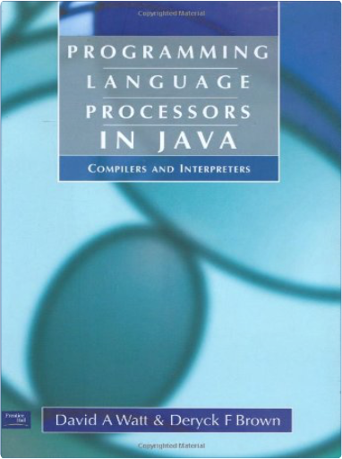
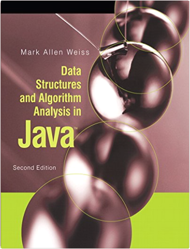

 Programming Language Processors in Java: Compilers and InterpretersDavid Watt, Deryck Brown  This book provides a gently paced introduction to techniques for implementing programming languages by means of compilers and interpreters, using the object-oriented programming language Java. The book aims to exemplify good software engineering principles at the same time as explaining the specific techniques needed to build compilers and interpreters.  Data Structures and Algorithm Analysis in JavaMark A. Weiss In this text, readers are able to look at specific problems and see how careful implementations can reduce the time constraint for large amounts of data from several years to less than a second. This new edition contains all the enhancements of the new Java 5.0 code including detailed examples and an implementation of a large subset of the Java 5.0 Collections API. This text is for readers who want to learn good programming and algorithm analysis skills simultaneously so that they can develop such programs with the maximum amount of efficiency. Readers should have some knowledge of intermediate programming, including topics as object-based programming and recursion, and some background in discrete math.  How to Break Software is a departure from conventional testing in which testers prepare a written test plan and then use it as a script when testing the software. The testing techniques in this book are as flexible as conventional testing is rigid. And flexibility is needed in software projects in which requirements can change, bugs can become features and schedule pressures often force plans to be reassessed. Software testing is not such an exact science that one can determine what to test in advance and then execute the plan and be done with it. Instead of a plan, intelligence, insight, experience and a "nose for where the bugs are hiding" should guide testers. This book helps testers develop this insight. The techniques presented in this book not only allow testers to go off-script, they encourage them to do so. Don't blindly follow a document that may be out of date and that was written before the product was even testable. Instead, use your head! Open your eyes! Think a little, test a little and then think a little more. This book does teach planning, but in an "on- the-fly while you are testing" way. It also encourages automation with many repetitive and complex tasks that require good tools (one such tool is shipped with this book on the companion CD). However, tools are never used as a replacement for intelligence. Testers do the thinking and use tools to collect data and help them explore applications more efficiently and effectively.  Without formal, verifiable software requirements—and an effective system for managing them—the programs that developers think they’ve agreed to build often will not be the same products their customers are expecting. In SOFTWARE REQUIREMENTS, Second Edition, requirements engineering authority Karl Wiegers amplifies the best practices presented in his original award-winning text?now a mainstay for anyone participating in the software development process.  This acclaimed book is a master teacher's tested program for turning clumsy prose into clear, powerful, and effective writing. A logical, expert, easy-to-use plan for achieving excellence in expression, Style offers neither simplistic rules nor endless lists of dos and don'ts. Rather, Joseph Williams explains how to be concise, how to be focused, how to be organized. Filled with realistic examples of good, bad, and better writing, and step-by-step strategies for crafting a sentence or organizing a paragraph, Style does much more than teach mechanics: it helps anyone who must write clearly and persuasively transform even the roughest of drafts into a polished work of clarity, coherence, impact, and personality. |

Texas ACM Library
Collection Total:
62 Items
62 Items
Last Updated:
Nov 13, 2017
Nov 13, 2017

 Made with Delicious Library
Made with Delicious Library